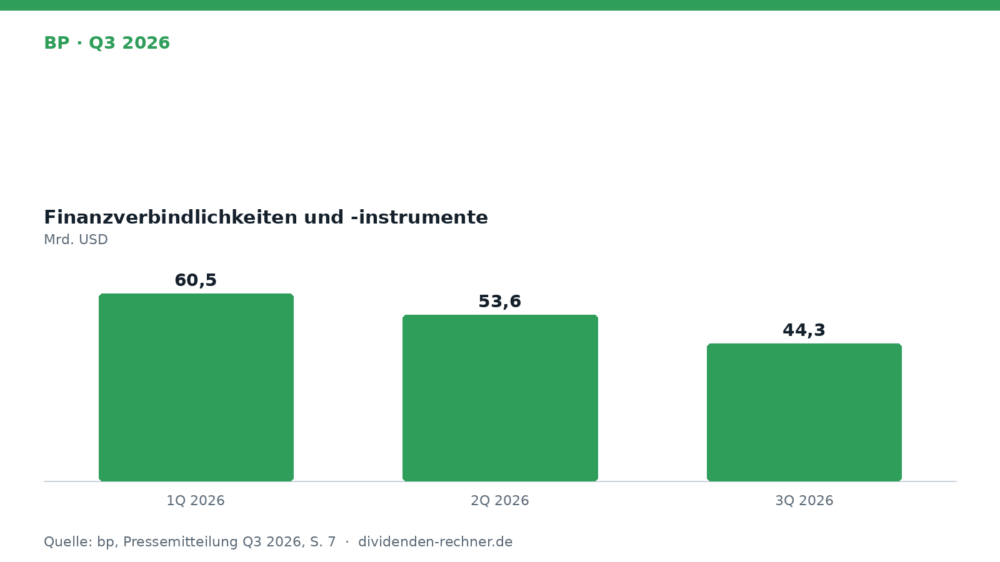
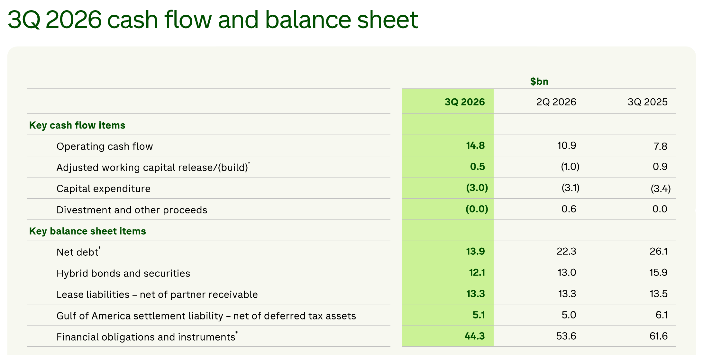

Quartalszahlen

BP senkt Finanzverbindlichkeiten und steigert bereinigten Gewinn deutlich
BP legt die Zahlen für das dritte Quartal 2026 vor, reduziert Schulden stark auf 44,3 Milliarden Dollar und hält an der Dividende fest.

Kurz gesagt
Gewinn: 8,5 Mrd. USD (286,4 %)
- Ergebnis: Der bereinigte Gewinn nach Ersatzkosten klettert im dritten Quartal kräftig auf 8,5 Mrd. USD.
- Schuldenabbau: Die Finanzverbindlichkeiten und -instrumente sinken binnen eines Quartals von 53,6 Mrd. USD auf 44,3 Mrd. USD.
- Ausblick: Für das Gesamtjahr plant der Konzern mit Veräußerungserlösen von rund 8 Mrd. USD.
BP senkt Finanzverbindlichkeiten spürbar und treibt den bereinigten Gewinn nach oben
Im dritten Quartal 2026 verzeichnet der britische Energiekonzern BP eine spürbare Entlastung der Bilanz und ein deutlich höheres bereinigtes Ergebnis. Der bereinigte Ersatzkosten-Gewinn (Underlying RC profit) klettert auf 8,5 Mrd. USD, verglichen mit 2,2 Mrd. USD im Vorjahreszeitraum. Verantwortlich dafür sind vor allem höhere Realisierungen und ein starker Handel bei Gas und Produkten, während die Ölproduktion auf 2.220 mboed beziffert wird.

Eigene Darstellung nach Daten aus: bp, Quartalszahlen Q3 2026 vom 2026-10-27 · Original.Starker Cashflow und sinkende Schulden
Der operative Cashflow beläuft sich im abgelaufenen Jahresviertel auf 14,8 Mrd. USD, während im Vorquartal noch 10,9 Mrd. USD erzielt wurden. Die Kapitalinvestitionen (Capex) liegen bei 3,0 Mrd. USD. Dank dieser starken Mittelzuflüsse schrumpfen die gesamten Finanzverbindlichkeiten und -instrumente laut Bilanzgrafik von 60,5 Mrd. USD im ersten Quartal über 53,6 Mrd. USD im zweiten Quartal auf nun 44,3 Mrd. USD zum Stichtag 30. September 2026. Die Nettoverschuldung reduziert sich im gleichen Zeitraum stark auf 13,9 Mrd. USD (nach 22,3 Mrd. USD im Vorquartal).

Cashflow und Bilanzkennzahlen 3Q 2026. Quelle: bp, Quartalszahlen Q3 2026 vom 2026-10-27, S. 20 · Original. Ausschnitt nur zugeschnitten, sonst unverändert.Dividende und verlässliche Ausschüttung
Die ausgeschüttete Dividende je Aktie für das Quartal bleibt stabil bei 8,66 Cent (exakt 8,660 Cent je Aktie, im Vergleich zu 8,320 Cent im Vorjahresquartal). Die solide operative Cashflow-Generierung in Höhe von 14,8 Mrd. USD bietet eine komfortable Basis zur Bedienung der Aktionärsausschüttungen und der Kapitalinvestitionen, obwohl die Gesamtverbindlichkeiten des Konzerns nach wie vor auf einem hohen Niveau verharren.
Bewertung und Einordnung
Das Unternehmen treibt seine Portfoliomanagement-Strategie konsequent voran, was sich in laufenden Desinvestitionen und dem Abschluss des Verkaufs der Gelsenkirchen-Raffinerie Ende Juli zeigt. Dennoch bleibt BP anfällig für die Volatilität der Rohstoffmärkte. Die geplante Reduktion der Finanzverbindlichkeiten auf einen Korridor von 33 bis 35 Mrd. USD im vierten Quartal hängt maßgeblich von den erwarteten Divestmenterlösen von rund 7 Mrd. USD ab.
Ausblick und offene Punkte
Für das vierte Quartal 2026 rechnet das Management mit einer berichteten Upstream-Produktion von 2.090 bis 2.300 mboed, belastet durch saisonal schwächere Gasnachfrage und Wetterereignisse im Golf von Amerika. Für das Gesamtjahr 2026 peilt BP Investitionen zwischen 13,5 und 14,0 Mrd. USD an, während die effektive Steuerquote (Underlying ETR) zwischen 31 und 34 % erwartet wird.
Quelle: bp, Quartalszahlen Q3 2026 vom 2026-10-27. Rechenwege eigene Berechnung. Keine Anlageberatung.
Hinweis: Dieser Text dient der allgemeinen Information und ist weder Anlage-, Steuer- noch Rechtsberatung. Kapitalanlagen sind mit Risiken verbunden, bis hin zum Totalverlust.